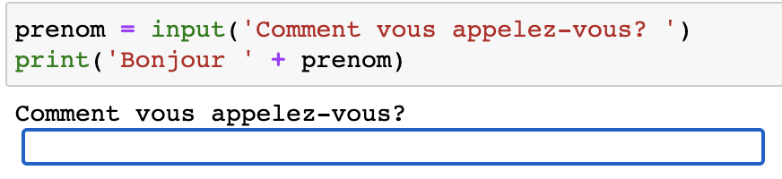
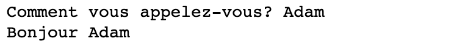
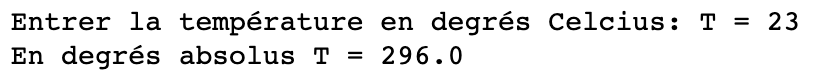
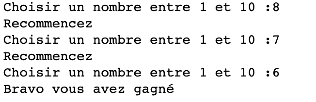

conditions
Les structures conditionnelles
Editeur Python
Pour tester les scripts python, vous pouvez:
- Soit utiliser un notebook. (Atrium>Capytale)

Dans une même cellule: Saisir une ou plusieurs lignes de code Python, puis appuyer simultanement sur Majuscule(Shift) + Entrée pour executer le code.
- Soit utiliser l’editeur Pyzo:
Mettre ## avant chaque script pour créer une cellule. Executer la cellule et passer à la suivante avec MAJ+CTRL+ENTREE.
- Soit utiliser l’editeur Spyder:
Mettre #%% avant chaque script pour créer une cellule. Executer la cellule et passer à la suivante avec MAJ+ENTREE.

Condition sur une valeur entrée (INPUT)
La fonction input permet d’ouvrir une boite de dialogue, d’attendre la saisie, et de récupérer une information donnée par l’utilisateur.
On utilisera une variable pour stocker l’information saisie:

demarrage du programme
saisie dans la boite de dialogue

utilisation de la variable prenom
Remarquer que le type retourné par la fonction input est toujours de format str. Pour modifier en un format numérique, et réaliser des opérations, il faudra utiliser l’une des fonctions int (pour obtenir un entier) ou float (pour un décimal):

conversion de 23°C en °K
Autre exemple:
Un boulanger veut créer un programme qui demande à l’utilisateur le nombre de baguettes qu’il désire, qui calcule le prix total (sachant qu’une baguette coûte 1.10 €) et qui affiche le prix que l’utilisateur doit payer.
Question a: Testez ce programme. Quel message d’erreur obtenez-vous ?
Testez maintenant le script suivant :
Question b: Quelle est la différence avec le code précédent de cet exemple ?
Boucles non bornées: while
1. Definition: Une boucle non bornée permet de répéter un élément de code un nombre à priori inconnu de fois.
On écrit l’instruction: while <condition d execution>:
Le bloc de code est indenté sous cette première ligne:
Cette boucle repète l’execution d’un bloc de code (instruction 1, instruction 2), tant que la <condition> est evaluée à True. Le test sur la <condition> est réalisé à chaque itération.
Lorsque cette <condition> n’est plus réalisée, le programme passe à l’instruction suivante.
Souvent, il sera nécessaire de démarrer le programme par initier une variable (celle utile pour la condition d’execution). De sorte que cette condition d’execution soit évaluée à True, et que le bloc de cette boucel s’execute au moins une fois.
Exemple 1: Réaliser un compteur
- à la première itération, i vaut 0, donc la condition
i <= 3est évaluée àTrueet le bloc est executé. l’utilisateur est invité à entrer le premier nom, (il va certainement entrer Riri), et i finit avec la valeur 1 (i = i + 1) - La boucle se poursuit jusqu’à ce que i soit égal à 4. Alors
i <= 3est évaluée àFalseet le programme poursuit APRES la boucle, avec la dernière instruction: affiche"c'est fini"
Exemple 2: reste de la division euclidienne de 40 par 3
- A la première itération,
rvaut 40 donc la<condition>r > 3 estTrue. r est diminué de 3 et prend la valeur 37. - A la dernière itération,
4 >= 3est evalué àTrue.rest diminué de 3 et prend la valeur 1 - Puis
r >= 3est evalué àFalse. Le bloc n’est pas executé et le programme s’arrête s’il n’y a pas d’autres instructions (ou poursuit le script sinon).
2. Le problème de l’arrêt
Pour le script précédent, si l’on avait remplacé la condition r >= 3 par r == 3 le programme aurait pu executer le bloc r = r - 3 indefiniment. r aurait pris successivement les valeurs 40, 37, … 4, 1, -2, -5, … etc, sans jamais prendre la valeur 0.
C’est le problème avec les boucles non bornées. Celles-ci peuvent ne pas finir, ce qui peut bloquer la machine.
Cet effet de boucle infini peut être recherché, par exemple en robotique, où l’on veut que le programme se poursuive indéfiniment. Ainsi, la structure d’un programme python sur carte microbit commence par la structure suivante:
3. Le jeu de devinette On veut créer un jeu qui questionne le joueur jusqu’à ce que celui-ci trouve le nombre choisi au hasard par l’ordinateur.

Trouve au bout de 3 essais
A chaque fois que la condition choix_joueur != N_aleatoire est True, c’est à dire que le nombre choix_joueur est différent de N_aleatoire, alors le bloc de la boucle while est exécutée.
Lorsque les valeurs choix_joueur et N_aleatoire sont identiques, le programme passe à la ligne print('Bravo vous avez gagné')
Question c: A votre avis: à quoi sert la 3e ligne
choix_joueur = 100?
Testez ce programme. Modifiez la condition d’arrêt de la boucle pour que l’on puisse sortir du jeu lorsque l’on saisit la valeur 0. Cela doit arrêter la partie.
Ajouter aussi un compteur du nombre d’essais. Afficher ce nombre à la fin du jeu.
Remarque : 0 et None
Dans le test logique, 0 et None se comportent comme s’il s’agissait de False:
Ce petit script, lorsqu’il est executé, renvoie toujours True quel que soit le nombre saisi, mais False dans les cas suivants. Si on saisit
- 0 # zero
- None # le type Rien
A savoir: dans certains cas, on peut faire l’économie de l’opérateur logique. Dans l’instruction conditionnelle if n, la condition vaut True dès que n est différent de 0 ou de None, ou bien n vaut True.
Ainsi, les scripts suivants sont équivalents
Portfolio
- Quelle est l’instruction python qui génère une sortie? Donner un exemple.
- Quelle instruction python permet de saisir une entrée? Donner un exemple. Quel est le type systématiquement retourné par cette instruction? Comment obtenir une valeur entière à partir de la saisie par l’utilisateur?
- Quelle est l’instruction conditionnelle avec alternative en python?
if .. elseou bienif .. elif .. else? - Quelle est l’instruction conditionnelle avec différents cas?
if .. elseou bienif .. elif .. else? - Quelle instruction génère une boucle infinie avec
while? - Boucle non bornée: pourquoi faut-il initialiser la variable
iavant d’écrirewhile i <= 3:? - Boucle non bornée: Comment réaliser un compteur simple, utlisant une boucle bornée, avec une condition d’arrêt lorsque la variable atteint la valeur 10? Ecrire le script complet. Votre programme doit être fonctionnel.
- Compléter la phrase: Le quotient d’une division euclidienne de a par b (
a//b) est égal au nombre de fois qu’il faut executera = a - bpour que l’on obtiennea ... b. - Dans quel cas peut-on faire l’économie d’un opérateur lors de l’écriture d’une opération logique? (voir paragraphe sur 0 et None)
Suite
Travaux pratiques: TP conditions